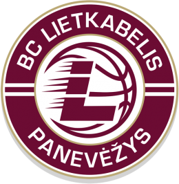

Panevėžio „Lietkabelis“

Įkūrimo data:
1964
Vyr. treneris:
Nenad Čanak
Dabartinė komandos sudėtis
- Kalaitzakis, Panagiotis
- Vaičiūnas, Tadas
- Lipkevičius, Vytenis
- Maldūnas, Gabrielius
- Gagić, Đorđe
- Radičević, Nikola
- Orelik, Gediminas
- Žemaitis, Kristupas
- Bērziņš, Kaspars
- Giedraitis, Dovydas
- Giedraitis, Karolis
- Vasiliauskas, Grantas